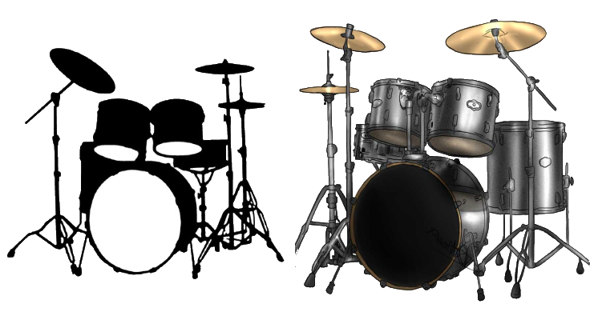
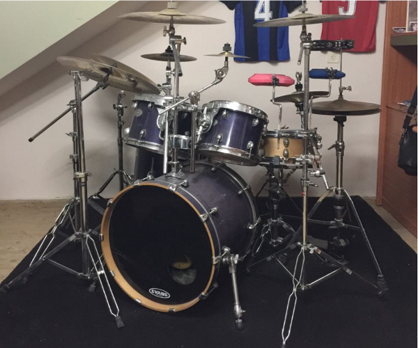

סוגי מערכות תופים :
מערכת תופים אקוסטית
מערכת תופים אקוסטית היא למעשה המערכת תופים הקלאסית, המערכת תופים אותה אתם מדמיינים בראש כשעולה לכם המושג 'תופים'. היא כמובן המערכת הנפוצה ביותר בעולם ובתודעה. הם משמשים להופעות, להקלטות, וגם לשימוש אקדמאי. המערכת מורכבת* מתוף מרכזי סנר, תוף בס שאליו מחובר פדאל, טומים, ומצילות, וכמובן שניתן גם להוסיף כלי הקשה נוספים. על כל הכלים האלה כמובן מתופפים באמצעות מקלות תיפוף. *- ישנו דף אשר מפרט את כל הכלים שממנה מורכבת מערכת התופים.
התופים במערכות הזולות בדרך כלל בנויים מעץ זול כגון צפצפה או מהגוני, בעוד שתופים יקרים יותר עשויים מעץ לבנה או מאדר שהם עצים חזקים יותר וצלילם נחשב נעים יותר. ניתן למצוא גם תופים פחות קונבנציונליים, כמו אלה הבנויים מתערובת עצים או מפלסטיק. לא רק סוג העץ קובע את צלילו ואיכותו של התוף. לעובי העץ משמעויות אקוסטיות רבות, גם לטפט שעליו. תופים איכותיים לרוב מחוברים למערכת בכמה שפחות מגע, כלומר דרך שלוש נקודות קטנות קרובות אחת לשנייה שמחוברות לזרוע. במערכות לא טובות יש צינור מתחת שחודר לתוך התוף. על התוף מתוח עור, שעליו מכים. ישנם כמה סוגים של עורות שנותנים צלילים שונים וגם משפיעים על המקל, שפוגע בהם בצורה אחרת. עורות עשויים כיום מפלסטיק בעוד שבעבר היו עשויים מעור (ומכאן שמם). ישנם עורות שקופים, עורות לבנים, עורות כפולים, עורות עם שכבת שמן פנימית ועוד.

היתרונות במערכת תופים אקוסטית היא שתחושת הנגינה היא אמיתית, וכשמכים על התוף יש את ההרגשה הנכונה. בנוסף, המראה של המערכת מרשים ונראה ממש יפה, יש המון צבעים וגימורים וכך אפשר ממש לבחור את המראה. באופן כללי אפשר לרכוש מערכת תופים שנשמעת אופן כללי אפשר לרכוש מערכת תופים שנשמעת טוב במחירים שהם יחסית לא גבוהים. המערכת כמעט ולא מתקלקלת, כך למשל במידה ונקרע העור – ניתן להחליפו בקלות ובמחיר סביר.
עד כאן הכל נהדר, אך כמובן שלמטבע יש שני צדדים, ויש מחיר מסוים שעלינו לשלם: הרעש – הוא למעשה הגורם הבעייתי ביותר מבחינת התופים האקוסטיים. כיום רוב האנשים גרים בבתים משותפים ויכולה להיווצר בעיה עם השכנים בעקבות הרעש, ומעבר לכך – זה עלול להגביל את שעון האימונים בעקבות הרעש (חוויתי זאת על בשרי). הנגינה בבית מצריכה השקעה באטימה ואקוסטיקה בסיסית, מה שמצריך הוצאה כספית נוספת. בנוסף, המערכת היא גדולה ותופסת מקום חלל רב בחדר שבו היא נמצאת. תלוי כמובן בגודל המערכת. בסופו של דבר, אין תחליף לצליל האמיתי והמקורי שמביאה המערכת האקוסטית. אני את הבחירה שלי עשיתי:  בתמונה: מערכת התופים האקוסטית שלי
ולסיום, נקנח עם עובדה מעניינת : מערכת התופים הגדולה בעולם מורכבת מ-813 חתיכות, ולקח 36 שנים לבנות את החלקים השונים. כדי להרכיב את המערכת שמיד תראו, לקח 15 שעות ע"י 4 אנשים! בנוסף: לקח שעה שלמה כדי להכות פעם אחת על כל ה-813 חלקים שמהם מורכבת המערכת. היא נוצרה ע"י ד"ר מארק טמפרטו והוא עדיין מכוון להביא אותה בעתיד ל-1000 חלקים. צפייה מהנה!